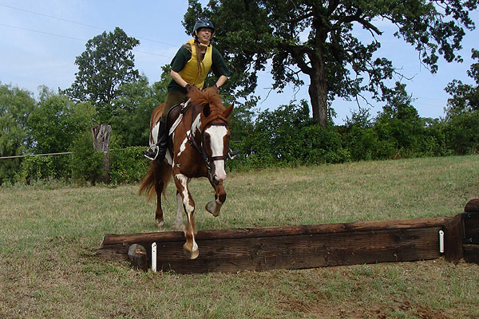

Nero schooling cross
country We've gone to a couple of schooling days
this month.
Nothing big, but working our way up. This
last time he
may have known what was coming up, because
he got
over excited in the warm up. After his
front feet left the ground
I got off and did the lunging bit, then
he got to walk around
while the others jumped. He did settle,
and we ended up having
a great ride. My trainer says he's still
young to this, and I know
how Thistle can get when he gets excited.
Something I'll
have to consider when taking him out.
Maybe living alone for the past few weeks
isn't best. He maybe got out
with the other horses and expected it
to be play time. He and Thistle might
get to work each other's energy out before
they go out for hunting
this season.
A bunch of little logs to build both
our confidence.
A lot more cantering than we ever
do working on dressage. When I have his mind, this is a lot of fun.
Camera person missed me, because they
framed for a normal jump. Nero was having none of that. He's still wary
of the big solid jumps.
This works a bit like a bank with
some height to it. Nero needed a number of tries to figure out how to jump
it. He never refused, but he wasn't sure the best way to get over it. The
ground drops away on the off side, and confused him.

The jump in the woods confirmed to
him how to take banks.
By this time he was happy to canter
banks and keep looking for the next fence.
Hesitant, and jumping up, instead
of
out.
Figuring it out, and moving on. We
had a lovely canter away.
The next school we started out small
again.
Once I was on and jumping, he got
focused.
Ditches don't intimidate him, so they
don't worry me.
Head up to keep the shoulders back.
And dropping down and away.
He is happy to bascule (as I saw with
his antics before I mounted up). It does make for a pretty picture jumping.
Bart likes this shot, where we're
over jumping.
Here we got a longer spot and he was
a bit flatter, which makes me think he was more comfortable taking the
jump this time.
And a little jump at the end to keep
up his confidence. We could tell he was having fun, because he didn't have
to jump, but did anyway.